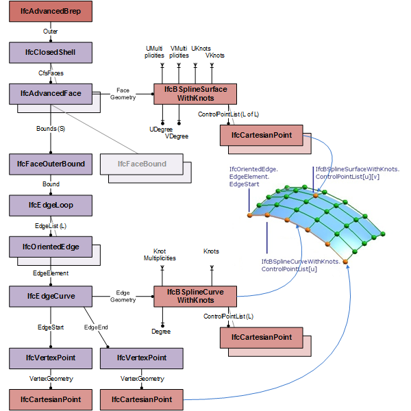
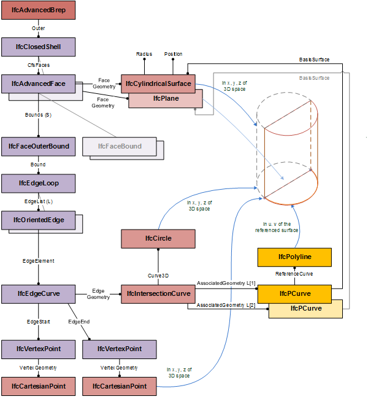
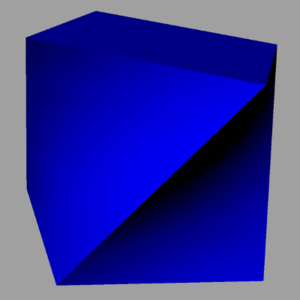
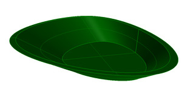

8.8.3.1 IfcAdvancedBrep
8.8.3.1.1 Semantic definition
An advanced B-rep is a boundary representation model in which all faces, edges and vertices are explicitly represented. It is a solid with explicit topology and elementary or free-form geometry. The faces of the B-rep are of type IfcAdvancedFace. An advanced B-rep has to meet the same topological constraints as the manifold solid B-rep.

Figure 8.8.3.1.A illustrates use of IfcAdvancedBrep for boundary representation models with b-spline surfaces. The diagram shows the topological and geometric representation items that are used for advanced B-reps, based on IfcAdvancedFace.

Figure 8.8.3.1.B illustrates use of IfcAdvancedBrep for boundary representation models with elementary surfaces. The diagram shows the topological and geometric representation items that are used for advanced B-reps, based on IfcAdvancedFace. It shows the use of IfcIntersectionCurve to provide the geometric representation of the edge curve both as 3D curve and as u,v pcurve in the parametric space of the adjacent surfaces.
Informal Propositions
- each face is a face surface;
- each face surface has its geometry defined by an elementary surface, swept surface or a b-spline surface;
- the edges used to define the boundaries of the face shall all reference an edge curve
- each curve used to define the geometry of the faces and face bounds shall be either a conic, or a line or a polyline or a b-spline curve
- the edges used to define the face boundaries shall all be trimmed by vertices of type vertex point
- no loop used to define a face bound shall be of the oriented subtype
8.8.3.1.2 Entity inheritance
-
- IfcSolidModel
- IfcAnnotationFillArea
- IfcBooleanResult
- IfcBoundingBox
- IfcCartesianPointList
- IfcCartesianTransformationOperator
- IfcCsgPrimitive3D
- IfcCurve
- IfcDirection
- IfcFaceBasedSurfaceModel
- IfcFillAreaStyleHatching
- IfcFillAreaStyleTiles
- IfcGeometricSet
- IfcHalfSpaceSolid
- IfcLightSource
- IfcPlacement
- IfcPlanarExtent
- IfcPoint
- IfcSectionedSpine
- IfcSegment
- IfcShellBasedSurfaceModel
- IfcSurface
- IfcTessellatedItem
- IfcTextLiteral
- IfcVector
8.8.3.1.3 Attributes
| # | Attribute | Type | Description |
|---|---|---|---|
| IfcRepresentationItem (2) | |||
| LayerAssignment | SET [0:1] OF IfcPresentationLayerAssignment FOR AssignedItems |
Assignment of the representation item to a single or multiple layer(s). The LayerAssignments can override a LayerAssignments of the IfcRepresentation it is used within the list of Items. |
|
| StyledByItem | SET [0:1] OF IfcStyledItem FOR Item |
Reference to the IfcStyledItem that provides presentation information to the representation, e.g. a curve style, including colour and thickness to a geometric curve. |
|
| IfcSolidModel (1) | |||
| * | Dim | IfcDimensionCount |
This attribute is formally derived. The space dimensionality of this class, it is always 3. |
| Click to show 3 hidden inherited attributes Click to hide 3 inherited attributes | |||
| IfcManifoldSolidBrep (1) | |||
| 1 | Outer | IfcClosedShell |
A closed shell defining the exterior boundary of the solid. The shell normal shall point away from the interior of the solid. |
8.8.3.1.4 Formal propositions
| Name | Description |
|---|---|
| HasAdvancedFaces |
Each face of the advanced B-rep shall be of type IfcAdvancedFace. |
|
|
8.8.3.1.5 Examples
-

Figure 8.8.3.1.C -

Figure 8.8.3.1.D
8.8.3.1.6 Formal representation
ENTITY IfcAdvancedBrep
SUPERTYPE OF (ONEOF
(IfcAdvancedBrepWithVoids))
SUBTYPE OF (IfcManifoldSolidBrep);
WHERE
HasAdvancedFaces : SIZEOF(QUERY(Afs <* SELF\IfcManifoldSolidBrep.Outer.CfsFaces |
(NOT ('IFC4X3_ADD2.IFCADVANCEDFACE' IN TYPEOF(Afs)))
)) = 0;
END_ENTITY;